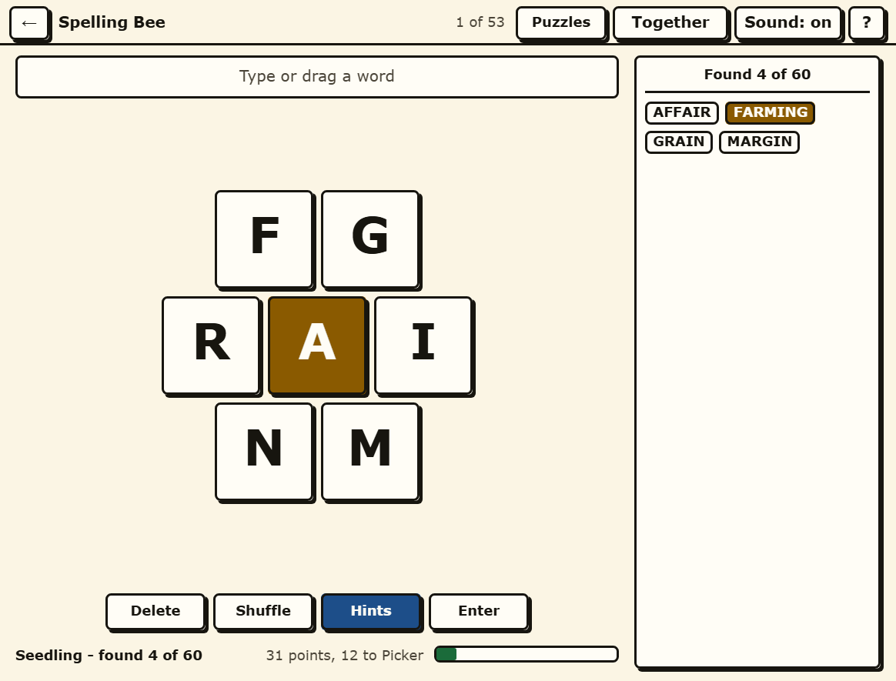

Farmy Spelling Bee
Seven letters, the middle one compulsory, and as long as you like to find the words in them.
Play Farmy Spelling Bee in your browser →

How it plays
Seven letters sit in a hive with one of them in the middle. Every word you make has to use that middle letter and be at least four letters long; letters may be used as often as you like. A four-letter word scores one point, a longer one scores its own length, and a pangram - a word that uses all seven letters - scores its length plus seven on top. Every hive has at least one.
Eight ranks run from Sprout to Best in Show, by way of Seedling, Picker, Farmhand, Grower, Harvester and Prize Marrow. They are percentages of that particular hive's own maximum, so Harvester means the same amount of work on an easy set as on a hard one.
Each hive carries its own answer list rather than leaning on a general dictionary, so nothing you type is refused by a word list that disagrees with the puzzle it is in.
Hints that count what is left
"Found 4 of 60" tells you fifty-six words exist and nothing whatever about them. The Hints table opens the grid every Spelling Bee player knows: how many words you still have to find at each starting letter and each length, how many begin with each two-letter pair, and how many pangrams are still out there.
It counts what remains, not the totals, which is what makes it useful an hour in - a table of totals stops being a hint the moment you have found anything. It gives you the shape of the answer and never the answer.
Fifty-three hives, 3,949 words
There is a hive of the day and it rotates through the whole set, but nothing is locked and nothing expires. All fifty-three are in a dropdown on the same screen, so a hive you gave up on in March is still there in September with your found words still in it.
Drag across the hive, or type
Press and drag across the letters and the word builds as your hand moves; let go to submit it. Or type it - you can start typing at any moment, without clicking into anything first, because there is no text box to find. Delete, Shuffle and Enter are three buttons no smaller than the rest.
Built for eyes that are not twenty any more
- Nothing is smaller than 18 pixels and nothing you can press is smaller than 48 by 48. The hive letters are far larger than that.
- Text clears AAA contrast, not AA. 7:1 rather than 4.5:1, dark ink on warm cream rather than black on white, which cuts the glare.
- Nothing is said with colour alone. The pangram in your found list is gold and carries a mark, so it still reads as special if gold and cream are the same shade to you.
- There is no timer in any part of this game, and no streak that a slow week can break.
- Nothing moves unless you ask it to. Transitions last 120 milliseconds and switch off if your browser says you prefer reduced motion.
Play it with somebody
Press Play together and you get a room: the same hive, one shared found list, and every word either of you gets appears on both screens. Send the link, or read out the six-character code - it has no O, I, L, S, Z, B, 0, 1 or 5 in it, precisely so it survives being said down a telephone. Two people rarely see the same words in a hive, which is what makes this the one of the four that plays best together.
No account, no sign-in, nothing kept
Your progress lives in your own browser and goes nowhere else. There is no sign-in and no download, and playing on your own makes no network call at all once the page has loaded. Playing together connects the two browsers directly to each other: the words go peer to peer, there is no game server, and the room stops existing the moment you close the tab.
The other three games
Farmy Spelling Bee is one of four word games in Farmy Crosswords, and they share the one page, the one style and the one Play together room.
- Farmy Wordle - six guesses at a five-letter word, 65 of them.
- Farmy Connections - sixteen words, four secret groups, 52 sets.
- Farmy Strands - a themed grid where every letter belongs to a word, 53 of them.